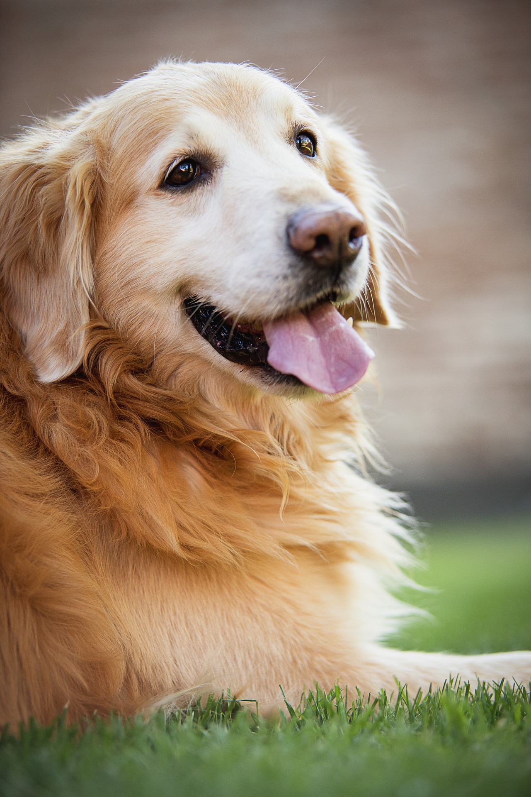

Despre noi
Proiectul Pet Society este un adăpost de animale, mai exact de cățeluși și pisici, dedicat pentru protejarea lor și ridicarea unui semnal de alarmă asupra acțiunilor pe care fiecare dintre noi, oameni, ar trebui să le luăm. Chiar dacă suntem un adăpost, scopul nostrum este mai mult: să informăm, să ajutăm, să transmitem pozitivitate, pentru că e cel mai important lucru.
România se confruntă cu o situație grea în ce privește animalele fără stăpân. Lipsa unei strategii naționale orientată spre rezolvarea problemei pe termen lung se resimte pe străzile orașelor. Câinii și pisicile fără stăpân ajung victimele abuzurilor sau își găsesc sfârșitul în așa numite adăposturi fără condiții minime de bunăstare pentru animale.
Misiunea noastră? Probabil aceeași cu a voastră, cei care priviți animalele ca pe niște membri ai familiei: să trăim într-o lume și mai ales într-o țară unde animalele sunt tratate mai bine de către oameni, iar oamenii primesc mai mult ajutor și mai multă iubire din partea animalelor, în schimb. Nu suntem stăpânii lor, suntem prietenii lor. Și, când se întâmplă ca prietenii noștri să nu poată vorbi, noi vom fi mereu aici, s-o facem în numele lor.
Pentru că prietenii contează, pentru că nu doar animalele au de câștigat din tratarea cu respect a oricărei forme de viață, ci și noi, oamenii. Vom continua să aprofundăm studiile referitoare la relația și comunicarea om-animal. Pentru că să le înțelegem mai bine înseamnă să le tratăm mai bine. Ambiția noastră este să-i facem pe români și pe oameni în general să se poarte mai frumos și mai responsabil cu toate animalele cu care intră în contact. Deși un viitor în care nici un animal și nici un om să nu mai sufere e greu de imaginat, unul în care să reducem semnificativ suferința din jur este în puterea noastră. Și-l putem transforma în realitate împreună, începând chiar de azi.